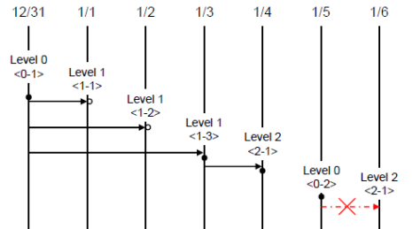
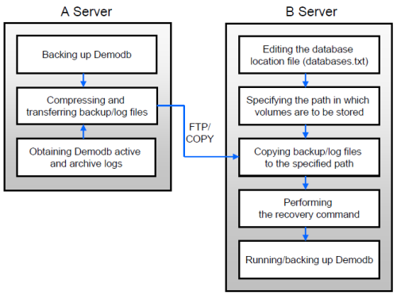

backupdb
A database backup is the procedure of storing CUBRID database volumes, control files and log files, and it is executed by using the cubrid backupdb utility or the CUBRID Manager. DBA must regularly back up the database so that the database can be properly restored in the case of storage media or file errors. The restore environment must have the same operating system and the same version of CUBRID as the backup environment. For such a reason, you must perform a backup in a new environment immediately after migrating a database to a new version.
To recover all database pages, control files and the database to the state at the time of backup, the cubrid backupdb utility copies all necessary log records.
cubrid backupdb [options] database_name[@hostname]
@hostname: It is omitted when you do backup in standalone mode. If you do backup on the HA environment, specify “@hostname” after the database name. hostname is a name specified in $CUBRID_DATABASES/databases.txt. If you want to setup a local server, you can specify it as “@localhost”.
The following shows options available with the cubrid backupdb utility (options are case sensitive).
-D, --destination-path=PATH store backup volumes to directory PATH
-r, --remove-archive delete unnecessary log-archives
-l, --level=LEVEL backup level
-o, --output-file=FILE print detailed backup messages to FILE
-S, --SA-mode stand-alone mode execution
-C, --CS-mode client-server mode execution
--no-check don't check a consistency of the database
-t, --thread-count=COUNT number of threads
--no-compress don't compress backup volumes
--sleep-msecs=N sleep N millisecond per 1M read
-k, --separate-keys keys file (_keys) for TDE is not included in the backup volume, but is separated into a file instead
- -D, --destination-path=PATH
The following shows how to use the -D option to store backup files in the specified directory. The backup file directory must be specified before performing this job. If the -D option is not specified, backup files are stored in the log directory specified in the databases.txt file which stores database location information.
cubrid backupdb -D /home/cubrid/backup demodbThe following shows how to store backup files in the current directory by using the -D option. If you enter a period (.) following the -D option as an argument, the current directory is specified.
cubrid backupdb -D . demodb
- -r, --remove-archive
Writes an active log to a new archive log file when the active log is full. If a backup is performed in such a situation and backup volumes are created, backup logs created before the backup will not be used in subsequent backups. The -r option is used to remove archive log files that will not be used anymore in subsequent backups after the current one is complete. The -r option only removes unnecessary archive log files that were created before backup, and does not have any impact on backup; however, if an administrator removes the archive log file after a backup, it may become impossible to restore everything. For this reason, archive logs should be removed only after careful consideration.
If you perform an incremental backup (backup level 1 or 2) with the -r option, there is the risk that normal recovery of the database will be impossible later on. Therefore, it is recommended that the -r option only be used when a full backup is performed.
cubrid backupdb -r demodb
- -l, --level=LEVEL
The following shows how to execute an incremental backup of the level specified by using the -l option. If the -l option is not specified, a full backup is performed. For details on backup levels, see Incremental Backup .
cubrid backupdb -l 1 demodb
- -o, --output-file=FILE
The following shows how to write the progress of the database backup to the info_backup file by using the -o option.
cubrid backupdb -o info_backup demodbThe following shows the contents of the info_backup file. You can check the information on the number of threads, compression method, backup start time, the number of permanent volumes, backup progress and backup end time.
[ Database(demodb) Full Backup start ] - num-threads: 1 - compression method: NONE - backup start time: Mon Jul 21 16:51:51 2008 - number of permanent volumes: 1 - backup progress status ----------------------------------------------------------------------------- volume name | # of pages | backup progress status | done ----------------------------------------------------------------------------- demodb_keys | 1 | ######################### | done demodb_vinf | 1 | ######################### | done demodb | 25000 | ######################### | done demodb_lginf | 1 | ######################### | done demodb_lgat | 25000 | ######################### | done ----------------------------------------------------------------------------- # backup end time: Mon Jul 21 16:51:53 2008 [Database(demodb) Full Backup end]
- -S, --SA-mode
The following shows how to perform backup in standalone mode (that is, backup offline) by using the -S option. If the -S option is not specified, the backup is performed in client/server mode.
cubrid backupdb -S demodb
- -C, --CS-mode
The following shows how to perform backup in client/server mode by using the -C option and the demodb database is backed up online. If the -C option is not specified, a backup is performed in client/server mode.
cubrid backupdb -C demodb
- --no-check
The following shows how to execute backup without checking the consistency of the database by using the --no-check option.
cubrid backupdb --no-check demodb
- -t, --thread-count=COUNT
The following shows how to execute parallel backup with the number of threads specified by the administrator by using the -t option. Even when the argument of the -t option is not specified, a parallel backup is performed by automatically assigning as many threads as CPUs in the system.
cubrid backupdb -t 4 demodb
- --no-compress
By default, CUBRID compresses the target database in order to reduce the size of the backup volume and then saves it. If a user wants to eliminate the CPU usage by the compression, they can set the --no-compress option not to compress the backup volume.
cubrid backupdb --no-compress demodb
- --sleep-msecs=NUMBER
This option allows you to specify the interval of idle time during the database backup. The default value is 0 in milliseconds. The system becomes idle for the specified amount of time whenever it reads 1 MB of data from a file. This option is used to reduce the performance degradation of an active server during a live backup. The idle time will prevent excessive disk I/O operations.
cubrid backupdb --sleep-msecs=5 demodb
- -k, --separate-keys
This option is used not to include the key file in the backup volume. The key file that is not included is separated into a file named <database_name>_bk<backup_level>_keys. If this option is not given, the key file is included in the backup volume by default. For a detailed description of key file separation, see Backup Encryption.
cubrid backupdb -k demodb
Backup Strategy and Method
The following must be considered before performing a backup:
Selecting the data to be backed up
Determine whether it is valid data worth being preserved.
Determine whether to back up the entire database or only part of it.
Check whether there are other files to be backed up along with the database.
Choosing a backup method
Choose the backup method from one of incremental and online backups. Also, specify whether to use compression backup, parallel backup, and mode.
Prepare backup tools and devices available.
Determining backup time
Identify the time when the least usage in the database occur.
Check the size of the archive logs.
Check the number of clients using the database to be backed up.
Online Backup
An online backup (or a hot backup) is a method of backing up a currently running database. It provides a snapshot of the database image at a certain point in time. Because the backup target is a currently running database, it is likely that uncommitted data will be stored and the backup may affect the operation of other databases.
To perform an online backup, use the cubrid backupdb -C command.
Offline Backup
An offline backup (or a cold backup) is a method of backing up a stopped database. It provides a snapshot of the database image at a certain point in time.
To perform an offline backup, use the cubrid backupdb -S command.
Incremental Backup
An incremental backup, which is dependent upon a full backup, is a method of only backing up data that have changed since the last backup. This type of backup has an advantage of requiring less volume and time than a full backup. CUBRID supports backup levels 0, 1 and 2. A higher level backup can be performed sequentially only after a lower lever backup is complete.
To perform an incremental backup, use the cubrid backupdb -l LEVEL command.
The following example shows incremental backup. Let’s example backup levels in details.

Full backup (backup level 0) : Backup level 0 is a full backup that includes all database pages.
The level of a backup which is attempted first on the database naturally becomes a 0 level. DBA must perform full backups regularly to prepare for restore situations. In the example, full backups were performed on December 31st and January 5th.
First incremental backup (backup level 1) : Backup level 1 is an incremental backup that only stores changes since the level 0 full backup, and is called a “first incremental backup.”
Note that the first incremental backups are attempted sequentially such as <1-1>, <1-2> and <1-3> in the example, but they are always performed based on the level 0 full backup.
Suppose that backup files are created in the same directory. If the first incremental backup <1-1> is performed on January 1st and then the first incremental backup <1-2> is attempted again on January 2nd, the incremental backup file created in <1-1> is overwritten. The final incremental backup file is created on January 3rd because the first incremental backup is performed again on that day.
Since there can be a possibility that the database needs to be restored the state of January 1st or January 2nd, it is recommended for DBA to store the incremental backup files <1-1> and <1-2> separately in storage media before overwriting with the final incremental file.
Second incremental backup (backup level 2) : Backup level 2 is an incremental backup that only stores data that have changed since the first incremental backup, and is called a “second incremental backup.”
A second incremental backup can be performed only after the first incremental backup. Therefore, the second incremental backup attempted on January fourth succeeds; the one attempted on January sixth fails.
Backup files created for backup levels 0, 1 and 2 may all be required for database restore. To restore the database to its state on January fourth, for example, you need the second incremental backup generated at <2-1>, the first incremental backup file generated at <1-3>, and the full backup file generated at <0-1>. That is, for a full restore, backup files from the most recent incremental backup file to the earliest created full backup file are required.
Compress Backup
A compress backup is a method of backing up the database by compressing it. This type of backup reduces disk I/O costs and stores disk space because it requires less backup volume.
From version 11.2 of CUBRID, compress backup is used by default.
Parallel Backup Mode
A parallel or multi-thread backup is a method of performing as many backups as the number of threads specified. In this way, it reduces backup time significantly. Basically, threads are given as many as the number of CPUs in the system.
To perform a parallel backup, use the cubrid backupdb -t | --thread-count command.
Managing Backup Files
One or more backup files can be created in sequence based on the size of the database to be backed up. A unit number is given sequentially (000, 001-0xx) to the extension of each backup file based in the order of creation.
Managing Disk Capacity during the Backup
During the backup process, if there is not enough space on the disk to store the backup files, a message saying that the backup cannot continue appears on the screen. This message contains the name and path of the database to be backed up, the backup file name, the unit number of backup files and the backup level. To continue the backup process, the administrator can choose one of the following options:
Option 0: An administrator enters 0 to discontinue the backup.
Option 1: An administrator inserts a new disk into the current device and enters 1 to continue the backup.
Option 2: An administrator changes the device or the path to the directory where backup files are stored and enters 2 to continue the backup.
******************************************************************
Backup destination is full, a new destination is required to continue:
Database Name: /local1/testing/demodb
Volume Name: /dev/rst1
Unit Num: 1
Backup Level: 0 (FULL LEVEL)
Enter one of the following options:
Type
- 0 to quit.
- 1 to continue after the volume is mounted/loaded. (retry)
- 2 to continue after changing the volume's directory or device.
******************************************************************
Managing Archive Logs
You must not delete archive logs by using the file deletion command such as rm or del by yourself; the archive logs should be deleted by system configuration or the cubrid backupdb utility. In the following three cases, archive logs can be deleted.
In non-HA environment (ha_mode=off):
If you configure the force_remove_log_archives value to yes, archive logs are kept only the number specified in log_max_archives value; and the left logs are automatically deleted. However, if there is an active tranaction in the oldest archive log file, this file is not deleted until the transaction is completed.
In an HA environment (ha_mode=on):
If you configure the force_remove_log_archives values to no and specify the number specified in log_max_archives value, archive logs are automatically deleted after replication is applied.
Note
If you set force_remove_log_archives as yes when “ha_mode=on”, unapplied archive logs can be deleted; therefore, this setting is not recommended. However, if keeping disk space is prior to keeping replication, set force_remove_log_archives as yes and set log_max_archives as a proper value.
Use cubrid backupdb -r and run this command then archive logs are deleted; note that -r option should not be used in an HA environment.
If you want to delete logs as much as possible while operating a database, configure the value of log_max_archives to a small value or 0 and configure the value of force_remove_log_archives to yes. Note that in an HA environment, if the value of force_remove_log_archives is yes, archive logs that have not replicated in a slave node are deleted, which can cause replication errors. Therefore, it is recommended that you configure it to no. Although the value of force_remove_log_archives is set to no, files that are complete for replication can be deleted by HA management process.
restoredb
A database restore is the procedure of restoring the database to its state at a certain point in time by using the backup files, active logs and archive logs which have been created in an environment of the same CUBRID version. To perform a database restore, use the cubrid restoredb utility or the CUBRID Manager.
The cubrid restoredb utility restores the database from the database backup by using the information written to all the active and archive logs since the execution of the last backup.
cubrid restoredb [options] database_name
If no option is specified, a database is restored to the point of the last commit by default. If no active/archive log files are required to restore to the point of the last commit, the database is restored only to the point of the last backup.
cubrid restoredb demodb
The following table shows options available with the cubrid restoredb utility (options are case sensitive).
-d, --up-to-date=DATE restore the database up to its condition at given DATE
--list display a list of backup volumes without restoring
-B, --backup-file-path=PATH PATH is a directory of backup volumes to be restored
-l, --level=LEVEL LEVEL of backup to be restored; see backup usage
-p, --partial-recovery perform partial recovery if any log archive is absent
-o, --output-file=FILE redirect output messages to FILE
-u, --use-database-location-path restore the database and log volumes to the path specified in the database location file
-k, --keys-file-path Path of key file (_keys) for TDE to be used during restoring
- -d, --up-to-date=DATE
A database can be restored to the given point by the date-time specified by the -d option. The user can specify the restoration point manually in the dd-mm-yyyy:hh:mi:ss (e.g. 14-10-2008:14:10:00) format. If no active log/archive log files are required to restore to the point specified, the database is restored only to the point of the last backup.
cubrid restoredb -d 14-10-2008:14:10:00 demodbIf the user specifies the restoration point by using the backuptime keyword, it restores a database to the point of the last backup.
cubrid restoredb -d backuptime demodb
- --list
This option displays information on backup files of a database; restoration procedure is not performed. This option is available even if the database is working, from CUBRID 9.3.
cubrid restoredb --list demodbThe following example shows how to display backup information by using the --list option. You can specify the path to which backup files of the database are originally stored as well as backup levels.
*** BACKUP HEADER INFORMATION *** Database Name: /local1/testing/demodb DB Creation Time: Mon Oct 1 17:27:40 2008 Pagesize: 4096 Backup Level: 1 (INCREMENTAL LEVEL 1) Start_lsa: 513|3688 Last_lsa: 513|3688 Backup Time: Mon Oct 1 17:32:50 2008 Backup Unit Num: 0 Release: 8.1.0 Disk Version: 8 Backup Pagesize: 4096 Zip Method: 0 (NONE) Zip Level: 0 (NONE) Previous Backup Level: 0 Time: Mon Oct 1 17:31:40 2008 (start_lsa was -1|-1) Database Volume Name: /local1/testing/demodb_keys Volume Identifier: -6, Size: 65 bytes (1 pages) Database Volume Name: /local1/testing/demodb_vinf Volume Identifier: -5, Size: 308 bytes (1 pages) Database Volume Name: /local1/testing/demodb Volume Identifier: 0, Size: 2048000 bytes (500 pages) Database Volume Name: /local1/testing/demodb_lginf Volume Identifier: -4, Size: 165 bytes (1 pages) Database Volume Name: /local1/testing/demodb_bkvinf Volume Identifier: -3, Size: 132 bytes (1 pages)With the backup information displayed by using the --list option, you can check that backup files have been created at the backup level 1 as well as the point where the full backup of backup level 0 has been performed. Therefore, to restore the database in the example, you must prepare backup files for backup levels 0 and 1.
- -B, --backup-file-path=PATH
You can specify the directory where backup files are to be located by using the -B option. If this option is not specified, the system retrieves the backup information file (dbname _bkvinf) generated upon a database backup; the backup information file in located in the log-path directory specified in the database location information file (databases.txt). And then it searches the backup files in the directory path specified in the backup information file. However, if the backup information file has been damaged or the location information of the backup files has been deleted, the system will not be able to find the backup files. Therefore, the administrator must manually specify the directory where the backup files are located by using the -B option.
cubrid restoredb -B /home/cubrid/backup demodbIf the backup files of a database is in the current directory, the administrator can specify the directory where the backup files are located by using the -B option.
cubrid restoredb -B . demodb
- -l, --level=LEVEL
You can perform restoration by specifying the backup level of the database to 0, 1, or 2. For details on backup levels, see Incremental Backup .
cubrid restoredb -l 1 demodb
- -p, --partial-recovery
You can perform partial restoration without requesting for the user’s response by using the -p option. If active or archive logs written after the backup point are not complete, by default the system displays a request message informing that log files are needed and prompting the user to enter an execution option. The partial restoration can be performed directly without such a request message by using the -p option. Therefore, if the -p option is used when performing restoration, data is always restored to the point of the last backup.
cubrid restoredb -p demodbWhen the -p option is not specified, the message requesting the user to select the execution option is as follows:
*********************************************************** Log Archive /home/cubrid/test/log/demodb_lgar002 is needed to continue normal execution. Type - 0 to quit. - 1 to continue without present archive. (Partial recovery) - 2 to continue after the archive is mounted/loaded. - 3 to continue after changing location/name of archive. ***********************************************************Option 0: Stops restoring
Option 1: Performing partial restoration without log files.
Option 2: Performing restoration after locating a log to the current device.
Option 3: Resuming restoration after changing the location of a log
- -o, --output-file=FILE
The following syntax shows how to write the restoration progress of a database to the info_restore file by using the -o option.
cubrid restoredb -o info_restore demodb
- -u, --use-database-location-path
This option restores a database to the path specified in the database location file(databases.txt). The -u option is useful when you perform a backup on server A and store the backup file on server B.
cubrid restoredb -u demodb
- -k, --keys-file-path=PATH
This option specifies the path of a key file required to restore the database. If the valid key file is not given, it could fail to restore. If this option is not given, the appropriate key file is searched automatically according to a priority. For more information on this, refer to Backup Encryption.
cubrid restoredb -k /home/cubrid/backup_keys/demodb_bk1_keys demodb
NOTIFICATION messages, log recovery starting time and ending time are written into the server error log file or the restoredb error log file when database server is started or backup volume is restored; so you can check the elapsed time of these operations. In this message, the number of log records to be applied(redo) and the number of log pages are written together.
Time: 06/14/13 21:29:04.059 - NOTIFICATION *** file ../../src/transaction/log_recovery.c, line 748 CODE = -1128 Tran = -1, EID = 1
Log recovery is started. The number of log records to be applied: 96916. Log page: 343 ~ 5104.
.....
Time: 06/14/13 21:29:05.170 - NOTIFICATION *** file ../../src/transaction/log_recovery.c, line 843 CODE = -1129 Tran = -1, EID = 4
Log recovery is finished.
Restoring Strategy and Procedure
You must consider the following before restoring databases.
Preparing backup files
Identify the directory where the backup and log files are to be stored.
If the database has been incrementally backed up, check whether an appropriate backup file for each backup level exists.
Check whether the backed-up CUBRID database and the CUBRID database to be backed up are the same version.
Choosing restore method
Determine whether to perform a partial or full restore.
Determine whether or not to perform a restore using incremental backup files.
Prepare restore tools and devices available.
Determining restore point
Identify the point in time when the database server was terminated.
Identify the point in time when the last backup was performed before database failure.
Identify the point in time when the last commit was made before database failure.
Database Restore Procedure
The following procedure shows how to perform backup and restoration described in the order of time.
Performs a full backup of demodb which stopped running at 2008/8/14 04:30.
Performs the first incremental backup of demodb running at 2008/8/14 10:00.
Performs the first incremental backup of demodb running at 2008/8/14 15:00. Overwrites the first incremental backup file in step 2.
A system failure occurs at 2008/8/14 15:30, and the system administrator prepares the restore of demodb. Sets the restore time as 15:25, which is the time when the last commit was made before database failure
The system administrator prepares the full backup file created in Step 1 and the first incremental backup file created in Step 3, restores the demodb database up to the point of 15:00, and then prepares the active and archive logs to restore the database up to the point of 15:25.
Time |
Command |
Description |
|---|---|---|
2008/8/14 04:25 |
cubrid server stop demodb |
Shuts down demodb. |
2008/8/14 04:30 |
cubrid backupdb -S -D /home/backup -l 0 demodb |
Performs a full backup of demodb in offline mode and creates backup files in the specified directory. |
2008/8/14 05:00 |
cubrid server start demodb |
Starts demodb. |
2008/8/14 10:00 |
cubrid backupdb -C -D /home/backup -l 1 demodb |
Performs the first incremental backup of demodb online and creates backup files in the specified directory. |
2008/8/14 15:00 |
cubrid backupdb -C -D /home/backup -l 1 demodb |
Performs the first incremental backup of demodb online and creates backup files in the specified directory. Overwrites the first incremental backup file created at 10:00. |
2008/8/14 15:30 |
A system failure occurs. |
|
2008/8/14 15:40 |
cubrid restoredb -l 1 -d 08/14/2008:15:25:00 demodb |
Restores demodb based on the full backup file, first incremental backup file, active logs and archive logs. The database is restored to the point of 15:25 by the full and first incremental backup files, the active and archive logs. |
Restoring Database to Different Server
The following shows how to back up demodb on server A and restore it on server B with the backed up files.
Backup and Restore Environments
Suppose that demodb is backed up in the /home/cubrid/db/demodb directory on server A and restored into /home/cubrid/data/demodb on server B.

Backing up on server A
Back up demodb on server A. If a backup has been performed earlier, you can perform an incremental backup for data only that have changed since the last backup. The directory where the backup files are created, if not specified in the -D option, is created by default in the location where the log volume is stored. The following is a backup command with recommended options. For details on the options, see backupdb .
cubrid backupdb -z demodbEditing the database location file on Server B
Unlike a general scenario where a backup and restore are performed on the same server, in a scenario where backup files are restored using a different server, you need to add the location information on database restore in the database location file (databases.txt) on server B. In the diagram above, it is supposed that demodb is restored in the /home/cubrid/data/demodb directory on server B (hostname: pmlinux); edit the location information file accordingly and create the directory on server B.
Put the database location information in one single line. Separate each item with a space. The line should be written in [database name]. [data volume path] [host name] [log volume path] format; that is, write the location information of demodb as follows:
demodb /home/cubrid/data/demodb pmlinux /home/cubrid/data/demodbTransferring backup files to server B
For a restore, you must prepare backup files. Therefore, transfer a backup file (e.g. demodb_bk0v000) from server A to server B. That is, a backup file must be located in a directory (e.g. /home/cubrid/temp) on server B.
Note
If you want to restore until the current time after the backup, logs after backup, that is, an active log (e.g. demodb_lgat) and archive logs (e.g. demodb_lgar000) are additionally required to copy.
An active log and archive logs should be located to the log directory of the database to be restored; that is, the directory of log files specified in $CUBRID/databases/databases.txt. (e.g. $CUBRID/databases/demodb/log)
Also, if you want to apply the added logs after backup, archive logs should be copied before they are removed. By the way, the default of log_max_archives, which is a system parameter related to delete archive logs, is 0; therefore, archive logs after backup can be deleted. To prevent this situation, the value of log_max_archives should be big enough. See log_max_archives.
Restoring the database on server B
Perform database restore by calling the cubrid restoredb utility from the directory into which the backup files which were transferred to server B had been stored. With the -u option, demodb is restored in the directory path from the databases.txt file.
cubrid restoredb -u demodbTo call the cubrid restoredb utility from a different path, specify the directory path to the backup file by using the -B option as follows:
cubrid restoredb -u -B /home/cubrid/temp demodb